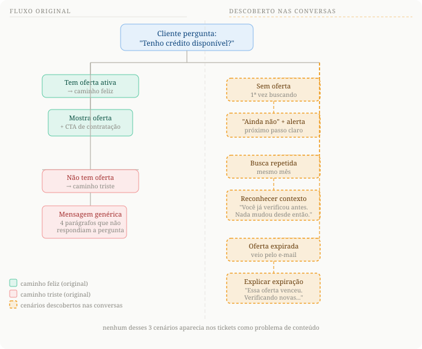

01: A fala que revelou tudo
"Não entendi, tenho empréstimo ou não?"
Avaliação real de CSAT: chatbot de crédito PJ
3k+
acessos mensais no fluxo de crédito
60%
CSAT médio. Maior ofensor do produto.
O chatbot de crédito PJ era o maior ofensor de CSAT do produto. Mais de 3 mil clientes por mês acessavam o fluxo e saíam sem entender se tinham crédito disponível. O problema não era técnico. Era de conteúdo.
02: O que os dados revelavam

Para ver a experiência completa com animações e imagens interativas, acesse pelo computador.
O que o fluxo via vs o que as conversas mostravam
Os números mostravam sintomas. As conversas mostravam a causa.
Li cada conversa para entender o que estava acontecendo. Encontrei três padrões que não apareciam nos tickets como problema de conteúdo.
O cliente perguntava se tinha crédito. O bot explicava como o sistema de análise funcionava.
Clientes que recebiam e-mail com oferta chegavam ao chatbot e a oferta já tinha expirado, sem nenhuma explicação.
Clientes que buscavam crédito mais de uma vez no mês caíam no mesmo fluxo genérico, sem reconhecimento do contexto.
Nenhum desses cenários aparecia nos tickets como problema de conteúdo. Só lendo as conversas foi possível enxergar.
03: Antes e depois
O cliente pergunta se tem crédito. O chatbot antigo enrolava em quatro parágrafos. O redesign responde em duas linhas: direto ao ponto, com o próximo passo claro.
Para ver a experiência completa com animações e imagens interativas, acesse pelo computador.
Antes e depois: a resposta que não enrolava
A resposta antiga tinha 4 parágrafos. A nova tinha 2 linhas.
A diferença não era o tamanho. Era o que vinha primeiro.
Antes
Sabemos que o empréstimo pode fazer a diferença no seu negócio e é por isso que estamos fazendo melhorias. Por enquanto, apenas uma pequena base de clientes tem o produto disponível.
A gente não consegue te garantir uma oferta no momento, mas temos algumas dicas que podem te ajudar a aumentar suas chances de passar pela análise de crédito...
Depois
Verifiquei aqui e no momento não há crédito disponível pra você.
Assim que surgir uma oferta, a gente te avisa!
04: O processo
01Análise qualitativa de conversas e quantitativa de dados
Leitura de conversas reais, análise de CSAT respondidos, mapeamento de comportamento conversacional e desk research com o time de produto.
02Identificação de cenários não mapeados
Dois cenários recorrentes que o fluxo não tratava: busca repetida no mesmo mês e oferta expirada após e-mail. Esses cenários geravam frustração sem nenhuma resposta adequada.
03Redesign dos fluxos
Reescrita aplicando hierarquia da informação, redução de carga cognitiva, quebra de blocos semânticos e criação de jornadas específicas para os cenários identificados.
04Monitoramento e iteração
Acompanhamento de KPIs após a implementação: CSAT, retenção, volume de transbordo. Para validar o impacto e identificar novas oportunidades de melhoria.
05: O resultado
+3pp
Retenção (76% para 79%)
O que os clientes passaram a dizer nas avaliações:
"respostas mais claras"
"rapidez"
"agilidade"
"muito bom atendimento"
"a informação"
Dados mostram onde dói. Conversas mostram por quê. Muitas vezes o problema que você foi resolver não é o problema real. É só o mais visível.
Samantha Barreto
06: Decisões de design
Por que hierarquia de informação resolve um problema de CSAT?
O cliente não estava insatisfeito com o produto. Estava insatisfeito com o esforço de entender a resposta. Quando a informação mais importante vem primeiro e a mensagem cabe em uma tela sem rolagem, o esforço cognitivo cai.
O que diferencia mapear cenários de simplesmente reescrever textos?
Reescrever sem mapear cenários resolve os sintomas, não as causas. Os cenários que identifiquei não estavam nos tickets como problema de conteúdo. Estavam escondidos como clientes insatisfeitos. Só lendo as conversas foi possível enxergar.